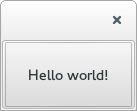

All examples here will work with either binding
Almost finished developing a new data acquisition system for the electrophysiology rig. I have used PyQt for the GUI
Cross platform
Large user base
Good graphical designer
Great API and docs
Programming paradigm where the flow of execution is directed by events, such as user clicks
result = func0(inputs) do_stuff_with_results result1 = func1(other_inputs) do_stuff_with_results def stuff(sdfsd): pass
Probably the most common way people are introduced to programming
while not exit_called: while not event_queue.is_empty(): dispatch_next_event() wait_for_more_events()
Naming notation : Q-
Receive events, do something useful
def mousePressEvent(event): if event.button == 'left': do_that_cool_thing()
Event handlers are the pieces of code which decide what action to take in response to an event
A QWidget all by itself is an emtpy window
from PyQt4 import QtGui app = QtGui.QApplication([]) hello_widget = QtGui.QPushButton("Hello world!") hello_widget.show() app.exec_()
Any widget without a parent is, by default, a window, so this button shows up as it own window.
from PyQt4 import QtGui class MyButton(QtGui.QPushButton): nclicks = 0 def mousePressEvent(self, event): super(MyButton, self).mousePressEvent(event) self.nclicks += 1 self.setText("pressed {}".format(self.nclicks)) if __name__ == '__main__': app = QtGui.QApplication([]) hello_widget = MyButton("click me") hello_widget.show() app.exec_()
The first thing we do is call super, since there may be other handlers that process this event. In this case the super class event handlers cause the button to have the depressed appearance.
class MyWidget(QtGui.QWidget): def __init__(self): super(MyWidget, self).__init__() layout = QtGui.QVBoxLayout() self.field = QtGui.QLineEdit() self.prompt = QtGui.QLabel("Amy says:") self.label = QtGui.QLabel("") layout.addWidget(self.field) layout.addWidget(self.prompt) layout.addWidget(self.label) self.setLayout(layout)
Any widget that contains another widget is called its "parent", and the widgets inside it are "children"
class MyWidget(QtGui.QWidget): def __init__(self): super(MyWidget, self).__init__() layout = QtGui.QVBoxLayout() self.field = QtGui.QLineEdit() self.prompt = QtGui.QLabel("Amy says:") self.label = QtGui.QLabel("") layout.addWidget(self.field) layout.addWidget(self.prompt) layout.addWidget(self.label) self.setLayout(layout) self.field.keyPressEvent = self.keyPressEvent def keyPressEvent(self, event): QtGui.QLineEdit.keyPressEvent(self.field, event) if event.key() == QtCore.Qt.Key_Backspace: self.label.setText(self.label.text()[:-1]) else: self.label.setText(self.label.text() + event.text())
So How do we use events to make changes to other widgets? We could reassign the event handler to the parent widget, while calling super on the static method of the original class... but don't do this, it's a mess and there is a better way.
A signal is emitted when a particular event occurs. signals can have parameters that they emit with the signal. Slots can be connected to widgets, so that when a signal is emitted, that slot gets executed. Any method with the correct arguments can serve as a slot.
from PyQt4 import QtGui, QtCore class MyWidget(QtGui.QWidget): def __init__(self): super(MyWidget, self).__init__() layout = QtGui.QVBoxLayout() self.field = QtGui.QLineEdit() self.prompt = QtGui.QLabel("Amy says:") self.label = QtGui.QLabel("") layout.addWidget(self.field) layout.addWidget(self.prompt) layout.addWidget(self.label) self.setLayout(layout) self.field.textChanged.connect(self.label.setText)
class MyWidget(QtGui.QWidget): def __init__(self): super(MyWidget, self).__init__() self.field = QtGui.QLineEdit() self.prompt = QtGui.QLabel("Amy says:") self.label = QtGui.QLabel("") layout = QtGui.QVBoxLayout() layout.addWidget(self.field) layout.addWidget(self.prompt) layout.addWidget(self.label) self.setLayout(layout) self.field.textChanged.connect(self.amySays) def amySays(self, text): self.label.setText(text + ' !!!')
PyQt | PySide |
|---|---|
Large user base | Newer, smaller user base |
Signals called "pyqtSignal" | Signals called "Signal" |
Support for Qt5 | No support for Qt5 (yet) |
GPL | LGPL |
import sys from PySide import QtGui, QtCore, QtWebKit class Browser(QtGui.QWidget): def __init__(self): super(Browser, self).__init__() self.page = QtWebKit.QWebView() self.addressBar = QtGui.QLineEdit("http://www.amyboyle.ninja") layout = QtGui.QVBoxLayout() layout.addWidget(self.addressBar) layout.addWidget(self.page) self.setLayout(layout) self.addressBar.returnPressed.connect(self.loadAddress) def loadAddress(self): address = self.addressBar.text() self.page.load(QtCore.QUrl(address)) if __name__ == '__main__': app = QtGui.QApplication(sys.argv) browser = Browser() browser.show() sys.exit(app.exec_())
| Space | Forward |
|---|---|
| Left, Down, Page Down | Next slide |
| Right, Up, Page Up | Previous slide |
| P | Open presenter console |
| H | Toggle this help |